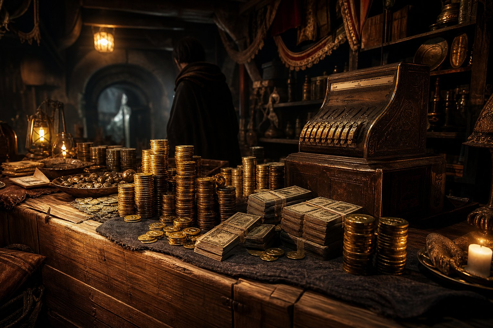

Les fondamentaux du Koen
Le Koen est la monnaie unique d'ABI : elle s'obtient en extrayant du butin, en vendant, en remplissant des missions — et elle brûle en munitions, repairs et kits. Trois lois économiques régissent le jeu :
- La valeur par slot : chaque emplacement de sac doit rapporter ≥5k (Normal) / ≥10k+ (Lockdown). Le temps de loot a un coût d'opportunité.
- L'espace de stockage est une ressource : un stockage plein de pacotille t'empêche de saisir les vrais trésors. « Sell everything you don't need. »
- Le risque doit être payé : jamais plus cher en entrée que ce que tu sais extraire. La bankroll protège le skill, pas l'inverse.
Toutes les sources de revenus
| Méthode | Effort | Risque | Potentiel |
|---|---|---|---|
| Covert Ops / Scav runs | Bas | Nul | Recover & learn — le filet débutant |
| Courses Impostor | Bas | Nul (kit gratuit) | Reset quotidien ou ~15 min — cash pur |
| Secure Ops | Bas | Très faible | Équipement gardé à la mort ; loot vert converti en Koen (~40-44 %) |
| Missions & hebdo | Bas | Nul | XP + Koen + réputation (commission plus basse) |
| Loot de conteneurs | Moyen | Moyen (PvP) | Registres, coffres-forts, vestes = la densité de Koen la plus élevée |
| Hostile Sector Northridge | Bas | Faible (PvE) | Rendements > Lockdown sans PvP entre joueurs (S6/S7) |
| Flips Deke & barters | Moyen | Faible | 150k+ par trade ; ~20k/pièce ×5 = 100k par slot de vente |
| Vente marché (batch) | Bas | Nul | Transforme le surplus en cash — empilé par 5 |
| Démontage d'armes | Bas | Nul | Mods > arme complète (optiques, poignées, chargeurs) |
| Craft de profit | Moyen | Faible | Ex. armure Spartan T5 : ~90k à crafter, ~180k à revendre |
| Flip de munitions | Moyen | Moyen (fluctuations) | Achat bas heures / revente pic — jusqu'à ~50 % de marge rapportés |
| PvP / Boss / clés | Haut | Élevé | Forbidden, farming de boss (Villa), runs de clés Lockdown |
| Battle Pass | Bas | Nul | Des millions de Koen sur la track gratuite de la saison |
Méthodes sûres — le filet débutant & mid
Les courses Impostor
Un kit prédéfini gratuit à chaque reset (quotidien ou ~15 min après une course). Tu ne peux rien perdre : c'est de l'argent gratuit en Normal. Toujours consommer le cooldown.
Le Secure Ops comme machine à cash
- Raids avec un plafond d'équipement (<400k) — même à la mort, ton équipement principal reste (mêmes chargeurs inclus).
- Le loot marqué vert est converti automatiquement en Koen (~40-44 % de la valeur) et envoyé par mail : zéro risque de perte sur ce butin.
- Idéal solo, débutant, et pour les semaines « rebuild ».
Le Northridge Hostile Sector
Rendements de loot supérieurs au Lockdown en PvE pur (pas de PvP entre équipes) — la mine d'or sous-estimée du milieu de game. Scavs de faible précision : amène du volume de munitions T3, un gros sac, une armure légère.

Méthodes payantes — quand tu as un bankroll
- PvP en Forbidden : le gain est maximal, la perte aussi. Ne t'y aventure qu'avec 3-4 kits de rechange.
- Boss farming (Beach Villa, pièces d'or) : rotations apprises, kit dédié, extraction planifiée — le boss n'est pas un farm AFK.
- Runs de clés Lockdown : payer la clé = parier sur le contenu de la pièce. Vérifie le prix de la clé vs le EV du loot avant chaque entrée.
- Les gros flips de munitions : reddit rapporte des méthodes d'achat massif aux heures creuses (reset matin/soir GMT) puis revente au pic — rentable mais chronophage et sensible au patch. À connaître, pas à vivre.
Maîtriser le marché
- Sous-cotation express : dans l'UI de vente, tape « – » puis « + » → prix ~1 % sous le marché, sans saisie. Vends plus vite, garde ta semaine de slots.
- Vente en masse : onglet Vente → bulk sale. Empile ×5 : un slot de vente = 5 unités × marge.
- Réputation contact = commission basse : finis les missions de Joel, Evita, Deke… chaque niveau réduit les frais et ouvre du stock.
- Achat heure creuse, vente heure de pointe : les prix baissent la nuit/matine, explosent après patch/event.
- Vérifier l'usage (S7) : clic droit sur un item du stockage → quels contacts l'achètent, quelles formules l'utilisent. Compare systématiquement contact vs marché.
- « Less than 2000 → vendre au contact » : ne gaspille pas un slot de vente pour 800 Koens.
L'empire Deke & les barters
Deke Vinson (niv. 3) est le contact économique central : il est le seul à racheter du gear à prix fixe, et son onglet Limited Time Items rafraîchit ~toutes les 6 et 12 heures (3 sets de 12 items par jour).
La boucle de flip, pas à pas
- Ouvre Deke → onglet offres limitées → loupe sur l'item = prix de marché actuel.
- Additionne le coût des matériaux barter (achetés au marché).
- Si matériaux < prix de revente après taxe → trade rentable.
- Realise le barter, stocke jusqu'à 5 exemplaires, revends en pile.
- ~20k de marge × 5 = ~100k par slot de vente — sans jamais tirer une balle.
| Trade exemplaire (rapports communauté) | Pourquoi ça marche |
|---|---|
| Casque O3 Heavy Tactical | Staple des runs T4/T5 — quasi toujours rentable à revendre |
| 926 Composite | Armure T5 très demandée, marge constante |
| Rigs Warrior · H-Tac A8/A9 · Defender M4 | Rentables ET utilisables — double avantage |
Les barters illimités sont ton income floor (répétables tant qu'il y a matériaux) ; les barters limités sont des opportunités — jamais la base de ton plan.
💡 Astuce matériaux
Les matériaux de barter sont plus chers aux heures de pointe : shoppe la nuit, complète les trades le matin. Et garde un Titanium Case pour stocker les matériaux de barter en attente.Craft pour le profit (Workbench S7)
- Formules au niveau max dès l'unlock : la barrière d'entrée du craft a baissé.
- Exemples rentables rapportés : armure Spartan T5 (90k → 180k), pièces de sniper, casques audio, optiques — la règle : matériau marché < produit marché − taxe.
- Recherche d'amélioration : concentre tes blueprints sur UNE formule craftée en permanence — Unexpected Surplus (remboursement de coûts) finance ta production.
- Munitions = demande perpétuelle (surtout T4/T5 sous les caps S7) : c'est le « staple » du craft.
- Les misc items (montres, journaux, analyseurs de gaz) ont de nouveaux usages en S7 — ne les vends pas les yeux fermés, vérifie l'usage d'abord.
Dépenses & les fuites de cash
- Toujours 2 kits budget en stock — le kit fragile reste au chaud.
- Réparer & assurer intelligemment : un gear abîmé perd de la valeur de revente ; un gear non assuré parti = zéro. Assure seulement le gear que tu ne peux pas te permettre de perdre.
- Munitions > mods : un canon à 80k ne sauve pas des balles T1.
- Pas de RMT : acheter des Koens externes = perdre tout (DMA Guard cible les environnements de login atypiques depuis août 2026 — le « meilleur » moyen de perdre ta bankroll).
- Pas d'impulsion clé : une clé doit se rentabiliser en N raids planifiés, pas par effet « rare! ».
Routine de bankroll hebdomadaire
- Jours 1-2 : farms bas risque (zones médicales, bureaux d'usine, Hostile Sector Northridge) + reset des offres Deke.
- Jours 3-4 : runs moyens (Farm/Valley Lockdown si fondamentaux solides) + craft & flips en fond.
- Jours 5-6 : missions d'élite / PvP si bankroll > 10M ; sinon continuation du plan lean.
- Chaque semaine : Battle Pass (track gratuite = millions), missions hebdo (lundi 05:00 UTC), vente batch ×5, vérification des offres limitées.
- Objectif : solde qui monte de façon prévisible, pas par un coup de chance en Forbidden.
🧟 Économie Utopia
La S7 ajoute un nouveau circuit : échantillons zombie → points de recherche, Elysium (~4,5M, garanti par la série de missions zombie), les marchands in-raid (vendre en raid = capital immédiat) et le Zombie No Man's Land Pass gratuit en login. Tous des flux à intégrer à ta routine.FAQ économie
Covert Ops + Impostor + Secure Ops + missions + ventes batch. Zéro risque, revenu cumulé régulier — la base sur laquelle tout le reste se construit.
Compare à chaque fois (loupe). Le marché paie mieux mais prend une taxe et coûte un slot de vente ; Deke achète net, immédiatement, sans slot. Les rouges : vente contact quasi toujours correcte sauf besoin de collection.
Trois coupables classiques : sac rempli de slots < valeur minimum (5k/10k), gold sink en kits trop chers (tu meurs plus cher que ce que tu gagnes), et stockage qui stagne (tu gardes tout, tu vends rien en pile ×5). Audite ces trois postes.
Les flips de munitions aux heures de montée/descente de prix existent et sont rapportés depuis des années — mais ils demandent une bankroll de départ (20-60M), du temps de refresh, et une sensibilité au patch. Considère-les comme un bonus d'expert, pas comme un guide débutant.
Sources — timesaver.gg (make Koen fast, barter S7) · overgear (money methods) · abibuilder economy guide · epiccarry Koens guide · reddit r/ArenaBreakoutInfinite (bullet flipping, NPC trades, tips) · patch notes S7 (caps, workbench, marchands in-raid). Vérifié le 17 novembre 2026.